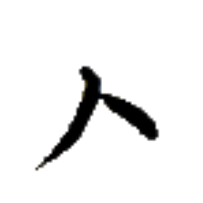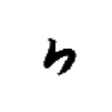
ア· 【之】
[名詞接続詞] （名詞の後について）～の、～のもの
[接尾辞] （不完全文の後について）～する～、～な～
之噫 ア·ア· 【之噫】
[名詞接続詞＋文末助詞] ～のもの
文末に置かれた 之【之】は文末助詞 噫【噫】と同音であり区別がつかないため、「～のもの」で文を終わらせる際はその後ろにさらに文末助詞 噫【噫】を置く。文字で書く際には 之【之】のみを書いて済ませてもよい。
之術 ア·ズィㇳ→ 【之術】
[接尾辞] （動詞＋目的語の後について）～する方法
之別 ア·パウ→ 【之別】
[接尾辞] ～の区別、～の差異
之子 ア·カㇳ→ 【之子】
[名詞接続詞] ガートゥ、カトゥ（人名構成要素）
バート民族の名前において、2 つの人名の間に配置されて、「～の子である…」という人名を構成する。
之上 ア·ザウ⤴ 【之上】
[名詞] (～の)上のほう
[場所詞] (～の)上空
[時間詞] (～する)前に
我行於山之上 パイ⤴モㇰ→イェ·ツォウ→ア·ザウ⤴
【我行於山之上】
私は山の上に行く。
鳥機行家之上 ルㇷ゚→キㇰ→モㇰ→ムㇳ⤴ア·ザウ⤴
【鳥機行家之上】
飛行機は家の上を通り過ぎる。
始口物之上須清行己手 フㇳ⤴ヤㇺ→ク·ア·ザウ⤴リュ·リン·モㇰ→ティン→ホㇷ゚→
【始口物之上須清行己手】
食事をする前に手を洗うべきです。
之下時 ア·ウㇳ⤴カㇰ· 【之下時】
[時間詞] (～した)後、(～した)時
彼之 チャㇷ゚⤴ア· 【彼之】
[連体詞] あの人の
静之 ナー→ア· 【静之】
[副詞] 音を立てずに、そっと
慥之 プㇳ·ア· 【慥之】
[副詞] 〔文章語〕真に、間違いなく、紛れもなく
四之衣 アㇷ゚→ア·タㇰ→ 【四之衣】
[名詞] アパータ、アープアターク、アーパターク
ラネーメやヴェフィスの伝統的な衣服の一つ。袖があり、四枚の布を繋いで作られる。素材は綿や麻が多い。
二之衣 イㇰ⤴ア·タㇰ→ 【二之衣】
[名詞] イークアターク、イーカターク
ラネーメやヴェフィスの伝統的な衣服の一つ。袖がなく、二枚の布を繋いで作られる。素材は綿や麻が多い。
刀之字 ガウ⤴ア·マン→ 【刀之字】
[名詞] 彫られた字
天之花 ズィュㇳ⤴ア·シュオウ→ 【天之花】
[名詞] （雅語）雪
意之別字 シャー⤴ア·パウ→マン→ 【意之別字】
[名詞] 歴史的には同音/類音の単語を表していた字が、単語の意味の差に基づいて複数に分化するようになったもの
心無之 ヒアー→ムン→ア· 【心無之】
[副詞] 何気なく
心善之 ヒアー→カイㇳ·ア· 【心善之】
[副詞] 喜んで、楽しそうに
須多之 リュ·タウン→ア· 【須多之】
[副詞] 忙しそうに
馬虎之別 マウン→ダウ⤴ア·パウ→ 【馬虎之別】
[名詞] 知る人ぞ知る、分かる人には分かる
燐字を知っている者は 馬【馬】と 虎【虎】の字を容易に区別できることから、慣れていれば区別ができるが、不慣れな者には区別が難しいようなことを表す。
目為之目 ター→チャウ·ア·ター→ 【目為之目】
[名詞] アタツァニャタ（王の名前）
律定之国 ヤㇰ→ホアㇷ゚→ア·ズィㇷ゚→ 【律定之国】
[名詞] 法治国家
口件之囲 ヤㇺ→ウォウ→ア·ピアー⤴ 【口件之囲】
[名詞] ダイニングルーム、食事室
皇処之将 タㇺ⤴ホエゥ·ア·ワイ→ 【皇処之将】
[名詞] 他人のために自分を犠牲にする人、良い上司
集意之字 ダㇳ⤴シャー⤴ア·マン→ 【集意之字】
[名詞] 会意文字、それぞれの構成要素の意味を合わせた文字
真綿之字 プㇳ·ホン→ア·マン→ 【真綿之字】
[名詞] 真に軽い音節
パイグ語の文法用語。中調であり末子音を持たないような音節を指し、これらの音節は基本的に機能語として振る舞う。
手刀弓之 ホㇷ゚→ガウ⤴グアー⤴ア· 【手刀弓之】
[連体詞] 攻撃性のある
水筒 ヌアー⤴ボン⤴ 【水筒】
[名詞] 水道管
水筒在失生水 ヌアー⤴ボン⤴アイㇺ⤴チㇷ゚→ヤン→ヌアー⤴
【水筒在失生水】
水道管が水漏れしている。
水在 ヌアー⤴アイㇺ⤴ 【水在】
[状態動詞] （魚や果物などが）新鮮である
水高 ヌアー⤴ズエゥー→ 【水高】
[名詞] 水位
水奮 ヌアー⤴プアㇳ⤴ 【水奮】
[状態動詞] 悲しんでいる
水神 ヌアー⤴トゥン⤴ 【水神】
[名詞] アリノディヤ（地名）
水力 ヌアー⤴ピュ· 【水力】
[名詞] ヌワピユ、ヌヮピュ（人名）
口水 ヤㇺ→ヌアー⤴ 【口水】
[離合詞] 飲む
[名詞] 飲み水、飲み物
我口清水 パイ⤴ヤㇺ→リン·ヌアー⤴
【我口清水】
私は綺麗な水を飲む。
与我口水 トゥイ⤴パイ⤴ヤㇺ→ヌアー⤴
【与我口水】
水をくれ。
刀水 ガウ⤴ヌアー⤴ 【刀水】
[名詞] ガウヌア、カウナ（アイル共和国クワケ郡の大都市）
入水 リㇳ→ヌアー⤴ 【入水】
[動詞] 水に入る、沈む、(セッカイクで)入水する
[名詞] (セッカイクの)入水
入水下 リㇳ→ヌアー⤴ウㇳ⤴ 【入水下】
[動詞] 沈没する
果水 トゥアー→ヌアー⤴ 【果水】
[名詞] フルーツジュース
檸水 ズィエㇳ→ヌアー⤴ 【檸水】
[名詞] レモンジュース
皇水 タㇺ⤴ヌアー⤴ 【皇水】
[名詞] タンナ（地名およびセッカイク用語）
静水 ナー→ヌアー⤴ 【静水】
[名詞] ナナラ（行政区画名）
静水集 ナー→ヌアー⤴ダㇳ⤴ 【静水集】
[名詞] ナナラ郡（アイル共和国の郡名）
天水下 ズィュㇳ⤴ヌアー⤴ウㇳ⤴ 【天水下】
[主語＋動詞] 雨が降る
天水激之下噫 ズィュㇳ⤴ヌアー⤴ガㇰ→ア·ウㇳ⤴ア·
【天水激之下噫】
もうすぐ雨が降るよ。
月光水行 シェㇺ→アイㇰ⤴ヌアー⤴モㇰ→ 【月光水行】
[成句] 月は光り、水は流れる。
行山 モㇰ→ツォウ→ 【行山】
[動詞] 山に行く、山登りする
[名詞] ボードゲームの一種
軸山 ラー→ツォウ→ 【軸山】
[名詞] ラツォ（アイル共和国の中央に位置する山）
皇山 タㇺ⤴ツォウ→ 【皇山】
[名詞] （セッカイクの）中央の緑マス
閉囲 イン⤴ピアー⤴ 【閉囲】
[名詞] 密室、閉めきった部屋
閉門 イン⤴ギアウ→ 【閉門】
[動詞] 閉じる、(閉店時刻に達して)閉店する
閉机戦 イン⤴セゥㇳ⤴カイㇰ· 【閉机戦】
[名詞] ボードゲームの一種
 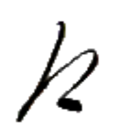
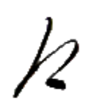
ボウ→ 【満】
[動詞] 満たす、満ちる、蔓延る
天光激之満 ズィュㇳ⤴アイㇰ⤴ガㇰ→ア·ボウ→
【天光激之満】
そろそろ夜明けだ。
王冠之光満全族 ヨウ·アイ⤴ア·アイㇰ⤴ボウ→ベゥー→ニㇺ⤴
【王冠之光満全族】
王冠の光が全民族に満ちる。
口満 ヤㇺ→ボウ→ 【口満】
[動詞] 食事をして腹を満たす
家名 ムㇳ⤴ズィン→ 【家名】
[名詞] 名字、姓
立家 ロウ·ムㇳ⤴ 【立家】
[離合詞] 家を建てる
黒家 フオㇰ⤴ムㇳ⤴ 【黒家】
[名詞] フォㇰムㇳ、ウォㇰムㇳ（人名）
生術家 ヤン→ズィㇳ→ムㇳ⤴ 【生術家】
[名詞] 工場
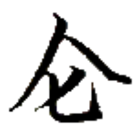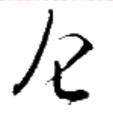
リー→ 【倉】
[名詞] コンピュータ
[名詞] 倉庫
倉字 リー→マン→ 【倉字】
[名詞] フォント、コンピューターフォント
骨軸倉字 ホウ⤴ラー→リー→マン→ 【骨軸倉字】
[名詞] 丸ゴシック調のフォント
網墨倉字 トゥㇰ⤴フオウ⤴リー→マン→ 【網墨倉字】
[名詞] ビットマップフォント
 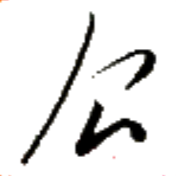
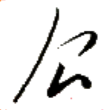
コウ→ 【覆】
[動詞] 覆う
油覆此鳥 ドゥイ·コウ→カー→ルㇷ゚→
【油覆此鳥】
この鳥は油に覆われている。
豆覆 クオㇳ→コウ→ 【豆覆】
[名詞] コッコ（地名）
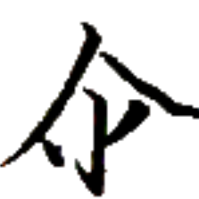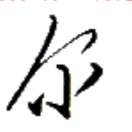
ホエゥㇳ· 【闇】
[状態動詞] 暗い
[名詞] バート（言語・民族名）
闇言 ホエゥㇳ·チェㇷ゚→ 【闇言】
[名詞] バート語
闇人 ホエゥㇳ·スㇰ⤴ 【闇人】
[名詞] バート人
闇族 ホエゥㇳ·ニㇺ⤴ 【闇族】
[名詞] バート民族
[名詞] バンニン（地名）
闇倒 ホエゥㇳ·アイㇷ゚→ 【闇倒】
[動詞] 気絶する、失神する
闇島 ホエゥㇳ·ドㇷ゚→ 【闇島】
[名詞] ペデ島、ペドゥ島、ペズ島（アイル共和国を構成する島の一つ）
闇集 ホエゥㇳ·ダㇳ⤴ 【闇集】
[名詞] ペデ郡、ペドゥ郡、ペズ郡（アイル共和国の郡名）
闇光石 ホエゥㇳ·アイㇰ⤴ズィュー⤴ 【闇光石】
[名詞] ヘマタイト
全闇 ベゥー→ホエゥㇳ· 【全闇】
[時間詞] 夜通し
心闇 ヒアー→ホエゥㇳ· 【心闇】
[離合詞] 疲れている
[名詞] 疲れ
我心行闇此端 パイ⤴ヒアー→モㇰ→ホエゥㇳ·カー→タウ⤴
【我心行闇此端】
私は極限まで疲れている。
一上闇 エゥㇳ⤴ザウ⤴ホエゥㇳ· 【一上闇】
[時間詞] 昨夜
島集 ドㇷ゚→ダㇳ⤴ 【島集】
[名詞] 東諸島共和国連合
島集言 ドㇷ゚→ダㇳ⤴チェㇷ゚→ 【島集言】
[名詞] 東島通商語
光島 アイㇰ⤴ドㇷ゚→ 【光島】
[名詞] アイキト島（アイル共和国を構成する島の一つ）
闇島 ホエゥㇳ·ドㇷ゚→ 【闇島】
[名詞] ペデ島、ペドゥ島、ペズ島（アイル共和国を構成する島の一つ）
皇島 タㇺ⤴ドㇷ゚→ 【皇島】
[名詞] アタラン島（アイル共和国を構成する島の一つ）
母島 マㇺ→ドㇷ゚→ 【母島】
[名詞] マナナ島、マンマナ島（アイル共和国を構成する島の一つ）
父島 クアㇰ→ドㇷ゚→ 【父島】
[名詞] ヴェフィス本島、新島（ヴェフィス共和国を構成する島の一つ）
小島 ニー→ドㇷ゚→ 【小島】
[名詞] 小島（ヴェフィス共和国を構成する島の一つ）
輩島 フオㇰ→ドㇷ゚→ 【輩島】
[名詞] 蒼島（ヴェフィス共和国を構成する島の一つ）
広島 チエー→ドㇷ゚→ 【広島】
[名詞] シュカメニョーイシュケ島（リナエスト・オルス共和国を構成する島の一つ）
享島 ゼゥㇷ゚·ドㇷ゚→ 【享島】
[名詞] ブイロ島（リナエスト・オルス共和国を構成する島の一つ）
大月島 マー→シェㇺ→ドㇷ゚→ 【大月島】
[名詞] リナエスト本島、ブリェーシャン島
リナエスト・オルス共和国を構成する島のうち面積が最大の島。
蜜石島 ズィㇰ⤴ズィュー⤴ドㇷ゚→ 【蜜石島】
[名詞] シュケープラローシュ島（リナエスト・オルス共和国を構成する島の一つ）
豊民島 ホウ→ビアー→ドㇷ゚→ 【豊民島】
[名詞] フロン・ビェーイシュ島（リナエスト・オルス共和国を構成する島の一つ）
皇月島 タㇺ⤴シェㇺ→ドㇷ゚→ 【皇月島】
[名詞] タムシエルミワ島（ヴェフィス共和国を構成する島の一つ）
冬心 ヤㇳ→ヒアー→ 【冬心】
[名詞] ヤトヒア、ヤトゥキヤ（アイル共和国シェプ・オキヤウ郡の大都市）
 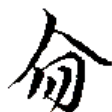
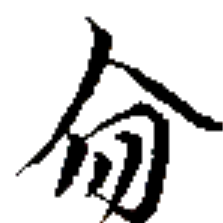 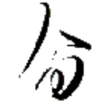
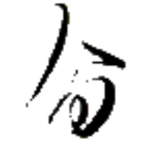
ネゥー⤴ 【猫】【貓】
[名詞] 猫
[略号] (音楽)基準音の3半音上の音、(移動ドで)レ♯・ミ♭の音
猫膠 ネゥー⤴バイㇳ· 【猫膠】
[名詞] ヌバイト（人名）
言猫猫 チェㇷ゚→ネゥー⤴ネゥー⤴ 【言猫猫】
[動詞] 猫が鳴く
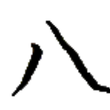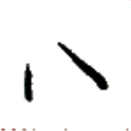
ナㇺ⤴ 【開】
[動詞] 開ける
[状態動詞] 開いている
開樽 ナㇺ⤴トウ⤴ 【開樽】
[名詞] カードゲームの一種
開銭処 ナㇺ⤴ズー→ホエゥ· 【開銭処】
[名詞] 市場(いちば)、屋台
 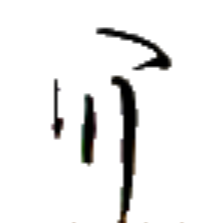
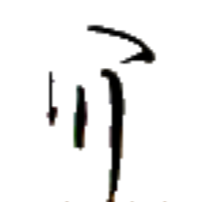
毎日 トゥㇳ→キアー→ 【毎日】
[時間詞] 毎日
毎毎 トゥㇳ→トゥㇳ→ 【毎毎】
[連体詞] ひとりひとりの、ひとつひとつの
 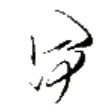
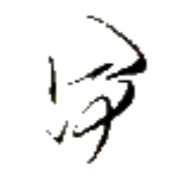
ナウ· 【勿】
[命令副詞] ～しないで、～しないように
勿口川水 ナウ·ヤㇺ→ヌㇳ⤴ヌアー⤴
【勿口川水】
川の水を飲まないでください。
此処勿煙 カー→ホエゥ·ナウ·ロウ→
【此処勿煙】
ここで煙草を吸わないでください。
勿心 ナウ·ヒアー→ 【勿心】
[間投詞] 気にしないで、心配しないで、どうぞお構いなく、遠慮なさらず
勿論 ナウ·ツイ→ 【勿論】
[間投詞] 議論の余地がない、当然だ